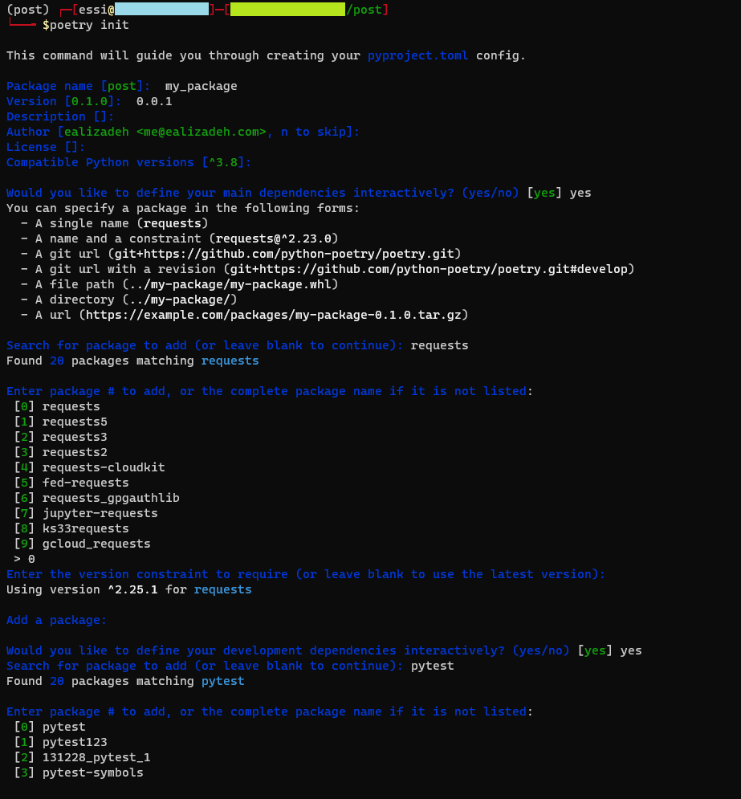
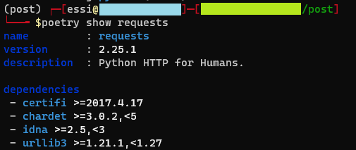
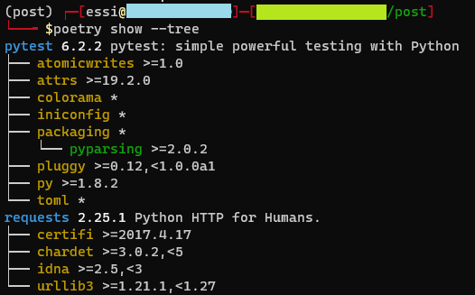

👉 This article is also published on Towards Data Science blog.
If you work on multiple Python projects at different development stages, you probably have different environments on your system. There are various tools for creating an isolated environment and install the libraries you need for your project. This post discusses different available technologies for Python packaging, environment, and dependencies management systems. Then, we will go over an ideal setup (of course, in my opinion 🙂) suitable for most Python projects using conda and Poetry.
In this post, library and package are used interchangeably, and they both refer to the Python package.
Introduction
Let’s first list different groups of technologies and highlight few tools
- An environment management system
- Virtualenv
- Conda environment
- Pipenv
- Package dependency resolver
- Conda
- Pipenv
- Poetry
- Package repository
A Quick Note on Package Repositories
The most popular Python package repository is the Python Package Index (PyPI), a public repository for many Python libraries. You can install packages from PyPI by running pip install package_name. Python libraries can also be packaged using conda, and a popular host for conda packages is Anaconda. You can install conda packages by running conda install package_name in your conda environment.
Conda: Jack of all trades?
Pipenv was created to address many shortcomings of virtualenv. However, the main reason I will not consider virtualenv nor the Pipenv as the environment managers are:
- I want to have the flexibility to install conda packages.
- Unlike conda, both virtualenv and Pipenv are Python environments only.
As you may note from the introduction, conda manages the environment and the packages, and the dependencies. Not only that, but it is language-agnostic too. Besides, conda can install PyPI packages by using pip in an active conda environment. You can install a fresh conda environment by running the following command
conda create -n env_name python=3.7It’s always recommended to have an environment file that contains your libraries and their specific versions. This is important due to portability, maintainability, and reproducibility. You can create a conda environment from a file (e.g., environment.yaml file below) using the following command
conda env create -f environment.yamlname: post
channels:
- default
- conda-forge
dependencies:
- python=3.8
- pandas=1.1.0
- pip=20.3.3
- pip:
- requests==2.25.0By now, you may say, great, conda does everything, so, let’s use conda packages in conda environments and let conda resolve any dependency issues.
Issues with conda
I think conda tries to do too much. After several years of using conda, here are few of my observations on conda as a package and dependency management:
Performance issues
My main problem with conda is its performance issues. Creating a new environment or even updating an old one may sometimes take a long time, especially if you have many packages. This is probably because conda tries to resolve the dependencies. There were few times that it took more than 30 minutes (yes, 30 minutes, not 30 seconds!) to create an environment. I initially thought that there is a connection issue or problems with connecting to the package repositories.
Dependency resolver issues
Conda may not even resolve the dependency issues. Since we cannot see the dependencies of specific conda packages (unlike Poetry), it may not be easy to resolve those issues.
Python packaging
Another issue with conda is when you want to build a conda package for your library and publish it. It’s not trivial (at least for me) since you would need several configuration files (like meta.yml, setup.py, etc.). You may have dependency issues too. You can find more information on how to build a conda package here.
Poetry
Poetry is a python packaging and dependency management system initially released in 2018. It smoothly handles the dependencies, especially if you use Poetry in a fresh environment and then add your Python packages. It can also handle other tools and configurations of your project in a deterministic way since it uses TOML format as the Python configuration file. In a nutshell, TOML is intended for using an easy-to-read minimal configuration file. Poetry uses the pyproject.toml configuration file to install python packages and set up the configurations.
pyproject.toml: Python Configuration file
pyproject.toml file is a new Python configuration file defined in PEP518 to store build system requirements, dependencies, and many other configurations. You can even replace setup.cfg and setup.py files in most scenarios. You can save most configurations related to specific python packages like pytest, coverage, bumpversion, Black code styling, and many more in a single pyproject.toml file. You previously had to either write those configurations in individual files or other configuration files like setup.cfg. However, pyproject.toml can include all of them and also all project package requirements too.
The Proposed Setup
I would recommend using conda as an environment manager, pip as the package installer, and Poetry as the dependency manager. In this case, you get all PyPI packages within the conda environment, and in rare cases where you want to install a conda package, you will be able to do so. Here are few benefits of using Poetry and the proposed setup:
- Better dependency management (often faster than conda dependency resolver)
- Having most package configurations (e.g., pytest, coverage, bump2version, etc.) in a single file.
- The ability to install a conda package if you have to (this should be your last resort!)
- Poetry can automatically add new packages to
pyproject.tomlfile. - Poetry can show the list of library dependencies of individual packages.
- Build a Python package and publishing to PyPI is as easy as running two commands!
- No need to have separate environment files for your production and development environments.
Step 1: Create a minimal conda environment
You can create a conda environment from the following YAML file by running conda env create -f environment.yaml. This will create a fresh conda environment that has Python 3.8. In a conda environment, you can pass a list of channels (the order is important) from which you want to install your packages. In addition to the default channel on Anaconda Cloud that is curated by Anaconda Inc., there are other channels that you can install packages. A popular channel is conda-forge that includes a community-led collection of packages. If you have a private conda channel, you can write it in the channels section.
name: post
channels:
- default
- conda-forge
dependencies:
- python=3.8Step 2: Install Poetry tool
You can install Poetry as per their instruction here. The recommended way is to install Poetry using the following command for OSx, Linux, or WSL (Windows Subsystem Linux).
curl -sSL https://raw.githubusercontent.com/python-poetry/poetry/master/get-poetry.py | python -Note: Installing Poetry using the preferred approach that is by the custom installer (the first approach that downloads get-poetry.py script) will install Poetry isolated from the rest of the system.
⚠️ Although not recommended, there is also a pip version of Poetry that you can install (pip install poetry). The developers warn against using the pip version in the documentation since it might cause some conflicts with other packages in the environment. But, if our environment is basically empty (although some base packages are installed like pip when creating a conda environment), then it is probably fine to install it through pip!
Step 3: Configure your Poetry
To configure Poetry for a new project, Poetry makes it very easy to create a configuration file with all your desired settings. You can interactively create a pyproject.toml file by simply running poetry init. This will prompt few questions about the desired Python packages you want to install. You can press Enter to process with default options.

As you can see in the above screenshot, you can add some packages only for development dependencies. Initializing the Poetry for your project will create the pyproject.toml file that includes all configurations we defined during the setup. We have one main section for all dependencies (used in both production and development environments), but we also have a section that contains packages used mainly for development purposes like pytest, sphinx, etc. This is the other advantage over other dependency management tools. You only need one configuration file for both your production and development environments.
[tool.poetry]
name = "my_package"
version = "0.0.1"
description = ""
authors = ["ealizadeh <abc@edf.com>"]
[tool.poetry.dependencies]
python = "^3.8"
requests = "^2.25.1"
[tool.poetry.dev-dependencies]
pytest = "^6.2.1"
[build-system]
requires = ["poetry-core>=1.0.0"]
build-backend = "poetry.core.masonry.api"
[tool.pytest.ini_options]
minversion = "6.0"
addopts = "-ra -q"
testpaths = [
"tests", # You should have a "tests" directory
]Step 4: Installing dependencies
Once you have your dependencies and other configurations in a pyproject.toml file, you can install the dependencies by simply running
poetry installThis will create a poetry.lock file. This file basically contains the exact versions of all the packages locking the project with those specific versions. You need to commit both the pyproject.toml file and poetry.lock file. I would strongly recommend you not to update the poetry.lock file manually. Let poetry does its magic!!
Poetry tips
Add new packages
If you want to add (or remove) a package to your environment, I would highly recommend you to do so by using the following command:
poetry add package_nameThis will automatically add the package name and version to your pyproject.toml file and updates the poetry.lock accordingly. poetry add takes care of all dependencies, and adds the package in the [tool.poetry.dependencies] section.
If you want to add a package to your development environment, you can simly pass a --dev option as below:
poetry add package_name --devYou can specify a specific version of a package, or even adding a package through git+https or git+ssh (see here for more details).
Remove packages
You can remove a package as following:
poetry remove package_to_removeShow package dependencies
If you want to see a list of all installed packages in your environment, you can run the following command:
poetry showNote that this will show the package dependencies too. It is sometimes helpful to see the dependencies of a Python package. Fortunately, you can do so using poetry show. For instance, we can see the list of dependencies of requests package in our environment using the following command:
poetry show requests
Even better, you can see all your project’s dependencies by just running:
poetry show --tree
From above figure, you can see that the blue-font package names (requests and pytest) are explicitly added to pyproject.toml file. Other libraries, in yellow, are their dependencies and do not need to be in your toml file.
You may use pip freeze (pip freeze > requirements.txt if you want to output the result into a file) to output all installed packages in your environment, but that will be quite messy.
Conclusion
In this post, we talked about different Python environment, package management, and dependency resolver tools. Then, we went over a setup for how to use conda as the environment manager and Poetry as the package manager and dependency resolver, and the benefits of using this combination in your Python projects.
Hope you find this article useful.
Useful Links
Introduction | Documentation | Poetry - Python dependency management and packaging made easy.
carlosperate/awesome-pyproject
Citation
@online{alizadeh2021,
author = {Essi Alizadeh},
editor = {},
title = {A {Guide} to {Python} {Environment,} {Dependency} and
{Package} {Management:} {Conda} + {Poetry}},
date = {2021-01-29},
url = {https://ealizadeh.com/blog/guide-to-python-env-pkg-dependency-using-conda-poetry},
langid = {en}
}